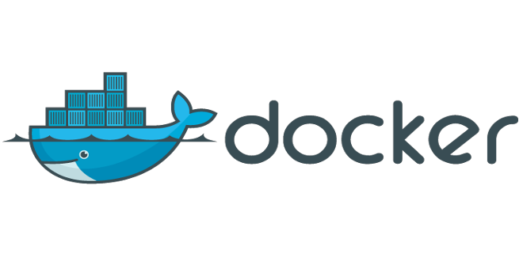
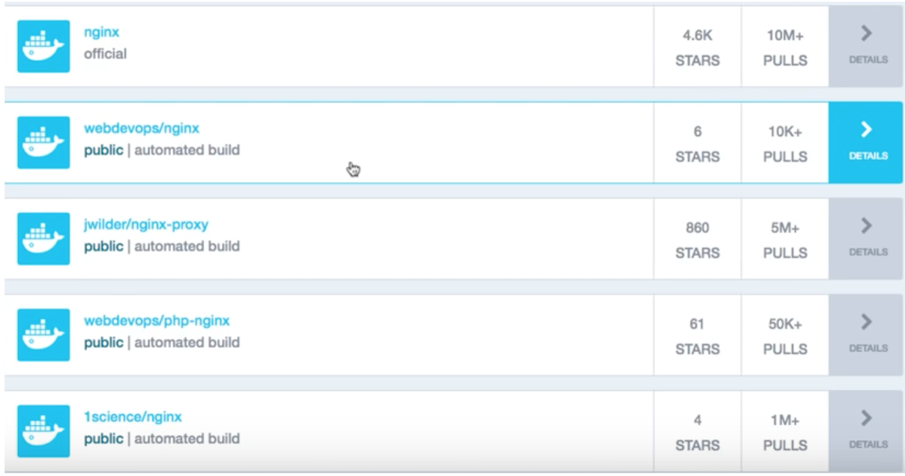
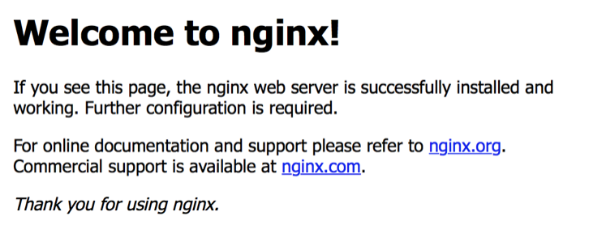
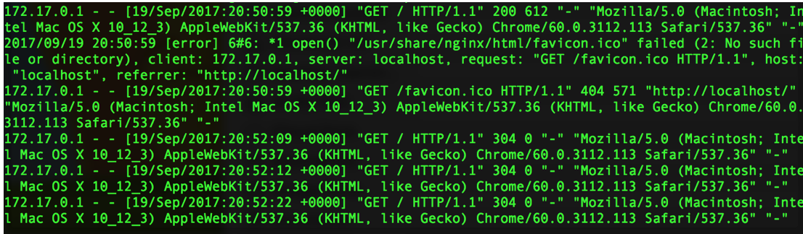

What is Docker?
Docker is awesome, that’s what it is. In a nutshell, docker helps you get round the problem of ‘well it worked on my machine’ routine. In a nutshell it does this by taking an application you want to work on, all the bits and bobs around it (database, configurations etc) and packages it up into a self contained container. These containers are built from simple images, so a whole bunch of containers one for each developer can be rolled out in minutes - allowing parallel development with no infringement on the main coding branch. Enterprises use Docker to build agile software delivery pipelines to ship new features faster, more securely and with confidence for both Linux, Windows Server, and Linux-on-mainframe apps.
So “whats a container?” I hear you ask. Containers are a way to package software in a format that can run isolated on a shared operating system. Unlike VMs, containers do not bundle a full operating system - only libraries and settings required to make the software work are needed. This makes for efficient, lightweight, self-contained systems and guarantees that software will always run the same, regardless of where it’s deployed.
Docker Engine
The docker engine:Docker Tutorial
Right lets get stuck in, first up here are some useful links you can use for installation
Getting Started
$ docker ps
shows docker containers installed
$ docker run hello-world
downloads and runs standard hello world docker application
Once you have installed and are happy that the service is up and running open terminal or command line and run the above commands.
Now its time to navigate to the official Docker site to look for some pre designed images we can use to spin up containers. First go here. Then in the top left corner you see a search bar, you can search for the application/lib/config combo you wish to use - note you don't actually download it here as you can do that from terminal
Images are obtained from docker hub, You can get custom made images as well as official ones. The search result shows metrics for each image, including the number of pulls, ratings etc. Lets search for Nginx and select the one that says official.
More information on Nginx related to docker can be found here.
On the docker Nginx information page, it also shows you examples of how to use the image, which I will flesh out. Normally the default nginx is based on Db and Jessie (a linux distribution which is feature rich and stable), but today we will be using the Alpine version - a trendy distribution that is linear and optimised for secrurity. Also it is MUCH smaller, from about 71mb down to 17mb. Now lets go log back into terminal and pull the Nginx official repo down to our computer.
$ docker pull nginx:1.10.2-alpine
This will download nginx for you
$ docker images
Now we can see our new image
Awesome, now that nginx has been downloaded and verified we want to run the docker container, but first we need to map our container to host ports. This is simple with docker, we simply use the format pxx:yy where xx is the container port and yy is your host port. If you try it without maping you wont be able to access your container port.
docker run --name my-nginx -p 80:80 nginx:1.10.1-alpineOnce complete, lets open up our browser and navigate to localhost. Simpley enter http://localhost or put in your local ip address. You should see the following output:

Notice that when you refresh the browser if you look on the terminal screen you can see it adds a new transaction for every refresh.

Terminate Container
$ CTL + C
terminates docker container application run
$ docker ps -a
displays all active and inactive containers
$ docker rm my-nginx
Removes container
$ docker ps -a
displays all active and inactive containers
$ docker run --name my-nginx -d -p 80:80 nginx:1.10.1-alpine
Runs in background
$ docker exec -ti my-nginx /bin/sh
Executes nginx commands inside the container
$ #/bin/sh
starts shell
$ ls -al
list all components
$ whoami
prints user
$ -v /host/path/nginx.conf
mounts the volume
$ docker --version
Docker version 17.03.0-ce, build 60ccb22
$ docker-compose --version
docker-compose version 1.11.2, build dfed245
$ docker-machine --version
docker-machine version 0.10.0, build 76ed2a6
Adam McMurchie 23/Sep/2017